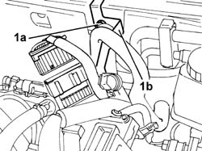
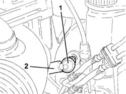

3330D20 one-way valve for brake servo - r+r
- Path
- Procedures > 33 BRAKES > 3330 HYDRAULIC BRAKING SYSTEM > 3330D BRAKE VACUUM SYSTEM > 3330D20 one-way valve for brake servo - r+r
- Kind
- repair procedure (removal / refitting; the operation number is the code)
- Applies to
- all engines; all production periods
- Interactive page
- https://sloeber94.github.io/elrnDB-lThss/en/#/78620
Applies to: all engines; all production periods
 Removing
Removing
 Refitting
RefittingSee in Op. 7040D50 ENGINE COMPARTMENT UPPER SOUND INSULATION SHIELD - R.R.
Applies to: engines: 2.4 JTD 10V; all production periods
Applies to: engines: 2.4 20V; all production periods
1. Undo the fixing bolt (1a) and move the wiring holder bracket (1b) to the side.

Applies to: all engines; all production periods
1. Remove the one-way valve from the brake servo which is a press-fit.
2. Disconnect the vacuum pipe from the one-way valve.

Applies to: all engines; all production periods
Refitting
Removing- Fit the one-way valve on the vacuum pipe.
- Fasten the one-way valve to the brake servo.
Applies to: engines: 2.4 20V; all production periods
- Position the wiring holder bracket and tighten the fixing bolt.
Applies to: engines: 2.4 JTD 10V; all production periods
Applies to: all engines; all production periods
See in Op. 7040D50 ENGINE COMPARTMENT UPPER SOUND INSULATION SHIELD - R.R.